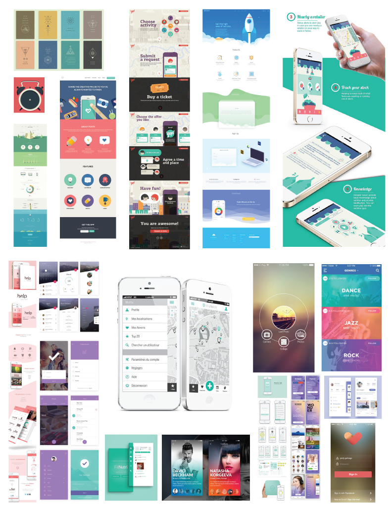
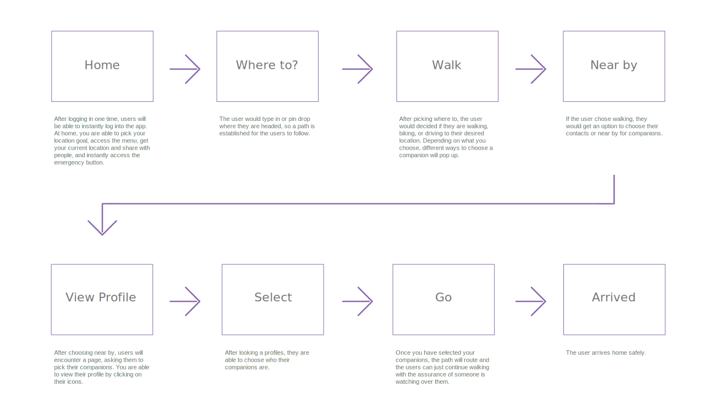
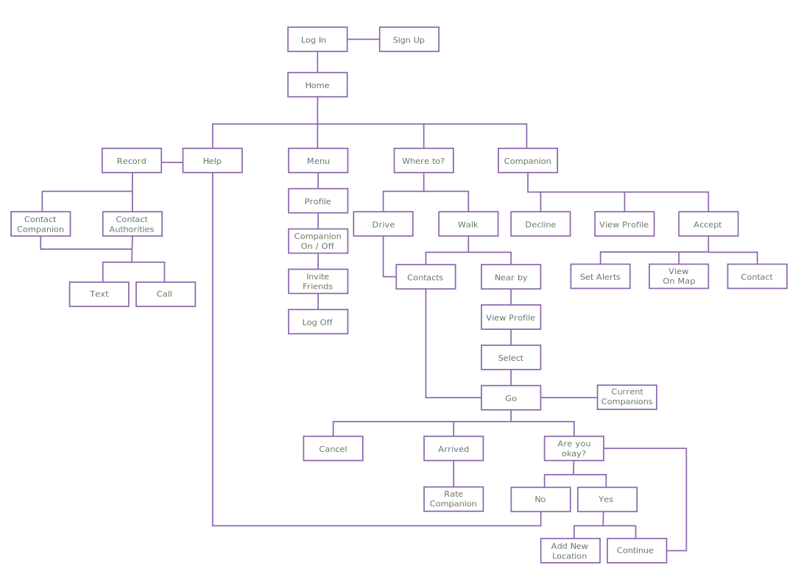

When traveling alone, people become an instant target to assault and robbery. To help prevent these incidents, Venture hopes to provide a companion to accompany solo travelers and a quick way to contact local authorities incase of any emergency. For the project, I researched and created a prototype for the app. To reach a wider audience, Venture was presented at the University of California, Davis’ Undergraduate Research Conference on April 28, 2017. My project was exhibited in the “Design Undergraduate Senior Showcase 2017” hosted by the Design Museum at UC Davis. The image on the left is the poster exhibited at the showcase, click on the image to see the full poster.
Design Process
- Research and Audience
- User Flow and Site Flow
- Wireframes
- Prototypes
- Usertesting
Moodboard
User Flow
Site Flow
By user testing throughout the creative process, I was able to get feedback on the app. For instance, through paper prototyping I learned that the companion choosing pages were confusing and that moving the help button to somewhere more clear would be better. During the audience testing, I spoke to Gina, who was visually impaired. Through my conversation with Gina, I learned how people who are visually impaired navigate their smart phones and what makes an app functional to them, because Venture could benefit this community of people. I also received feedback about functions I could add to Venture during my presentation at the Undergraduate Research Conference. (Picture on the left is me at the conference)